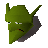
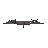
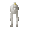
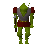
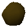

Observatory (underground)
Underground area at 2440, 9551 · Kingdom of Kandarin, Underground
Open on the world map → Open in knowledge graph → Surface: Observatory
NPCs
| NPC | Level | Spawns | Notable drops |
|---|---|---|---|
 Goblin guard | 42 | 1 | Coins, Water rune, Body rune, Goblin mail |
 Giant bat | 27 | 2 | |
| 25 | 4 | Herb drop table, Coins, Bronze arrow, Iron dagger | |
| 22 | 6 | Coins, Herb drop table, Iron med helm, Bronze bar | |
 Unicorn | 15 | 1 | |
| 9 | 2 | ||
 Goblin | 5 | 7 | Coins, Water rune, Body rune, Goblin mail |
| 2 | 9 | Coins, Water rune, Body rune, Goblin mail | |
| 1 | 21 | ||
 Boulder | 1 | ||
| 1 |